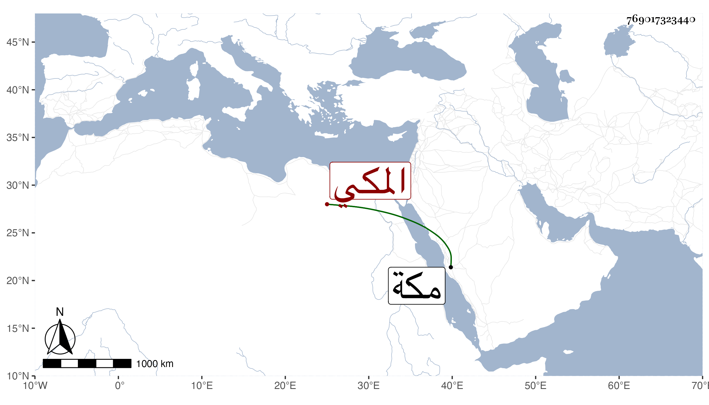

0902Sakhawi.DawLamic.ITO20230111-ara1.EIS1600.769017323440
Biography ID: 769017323440
705
محمد بن محمد بن محمد بن محمد بن أحمد بن محمد بن محمد بن سعيد أبو المحاسن بن الشرف أبي القسم بن الجمال أبي النجا بن البهاء أبي البقاء بن الضياء المكي الماضي أبوه وجده وجد أبيه وأبوه قضاة مكة . ولد في رجب سنة خمس وسبعين وثمانمائة بمكة ممن سمع مني بها في سنة ست وثمانين ورأيته يحضر دروس أبيه .
